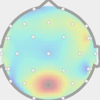

Resource overview
At this point, data from 20 human participants is publicly available. For each participant a number of different scans and auxilliary recordings have been obtained and several types of minimally preprocessed data are provided in addition. The total size of all data is several hundreds of gigabytes. This page provides an overview of the dataset in order to aid selection of sub-components. The full description of the data release is available in a dedicated publication.
Data records


Eye movements (in progress)
